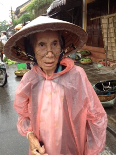
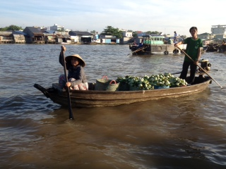

Maureen Fitzsimon goes back to VietNam, then on to Cambodia 2012
Page 1 - The South | Page 2 - Cambodia & The North | Back to Maureen's Home Page.
Latest updates: Tue 3 Apr Hoi An Cooking Class (new photo), Wed 4 Apr My Son, Hue (photos added), Thu 5 Apr Hue, bit of an "off" day, Fri 6 Apr Mekong Delta, Can Tho (photos added), Sat 7 Apr Cai Rang Floating Market, Rach Gia
Two weeks shopping, cooking, sewing and touring with the ladies.
Saturday 24 March
Brisbane -> Kuala Lumpur -> Ho Chi Minh
Another adventure begins...
 Itinerary for Weeks 1 and 2.
Itinerary for Weeks 1 and 2.
Yip..yip...yippee! The day has finally arrived. Unbelievable. It is a beautiful fresh morning with blue skies. Picked up Kay and Di and headed down to the Gold Coast airport, meeting up with our little group of ladies. A few were living the life of the Hoi Polloi, and flying Singapore airlines, and two were coming from Melbourne.
The Gold Coast looked spectacular as the plane soared above the beaches, sparkling in the early morning sun. Then across the Hyperdome at Loganholme, and for hours and hours across a majestically green outback. Never cease to wonder at how long it actually takes to leave the huge lands of Australia.
The onward flight to Ho Chi Minh was a tad delayed, but we happily landed in Vietnam at eightish pm their time, after 11 pm ours.
Some of the ladies have not travelled much, and so were quite in awe of the sights and smells of Nam on the way to the Queen Anne Hotel.
The guide is, indeed, a cheerful chap. Three years of learning English has resulted in reasonably accomplished verbosity!
Although windowless, our budget room was well appointed and comfortable. The Practice Manager, hereafter known as the PM, and I, had ourselves a good slumber.
Alas, not all were celebrating. Our wonderful local member, Barbara Stone, having kept the marginal seat of Springwood for 4 terms, was washed away in the landslide victory of the LNP.
Also excellent local people like Margaret Keech. After so many years, the change was a tsunami. Just wish it was not so huge, with so many inexperienced pollies doing the job. Funny system we have. Don't know any other organization, where sacking nearly all the staff and replacing them with people with no experience, would be considered a good thing!
Sunday 25 March
Ho Chi Minh
 Notre Dame Cathedral, Ho Chi Minh City.
Notre Dame Cathedral, Ho Chi Minh City.
And Bikes. The streets swarm with bikes.
So Sunday morning, off to the English Mass at Saigon's Notre Dame we trotted. Or, at least, four of us did. The others poked their heads in the door, and ran away, frightened.
On the way there was a big fuss for a visiting dignitary. Lots of police etc. At first, we thought it was a parade for Campbell Newman. Turns out it was the President of Chile, going to Mass. Anyway, we certainly prayed for Campbell Newman.
There was a wonderful choir and a good sermon about coping when times are tough. Then we waved the President of Chile goodbye, as you do.
Having been to Ho Chi Minh and surrounds previously, I decided not to join the gaggle of ladies going to the Chi Chi tunnels. Instead, I bought some cosmetics at The Diamond Centre, and then went to the tailor, Viet Thanh. This time, I had four lots of material from Lincraft in Loganholme, to be made into Paris - ish fashions.
Then off to the local phone shop to fit a local SIM for the iPad.
Having checked with Telstra before I left, that my phone had global roaming... You guessed it... No, it didn't! So emails to the other half have finally resulted in my reestablishment of communication with planet Earth.
So then off to walk my way around Saigon, trying not to be run over by too many motorbikes, but can't promise.
Did a long hot walk back from the river. Near the end, was trying to figure out which road off the roundabout to take. Pestered by a guy with a bicycle, who said he knew where the Queen Anne hotel was, we drove around quite a bit. Had even showed him a map. At the end, told him to pull over. He was obviously hopelessly lost.
Gave him $5 and he started to yell that he wanted more, then to yell that I would not pay him. So I screamed at the top of my lungs "help, police!" over and over. People came running. He kept it up, but looked a bit worried about the police. I gave him another $5 in front of witnesses and he went away. The cab driver took me to the hotel!
Should bloody know better, but I have to say that I am fearsome in an emergency!
Cheers, Maureen
Dinner at Trois Gourmands
 Dinner at Trois Gourmands, Ho Chi Minh City
Dinner at Trois Gourmands, Ho Chi Minh City
 Friend, Leigh Stamp with her children, Rachael and Sean, at Le Trois Gourmands, Ho Chi Minh City
Friend, Leigh Stamp with her children, Rachael and Sean, at Le Trois Gourmands, Ho Chi Minh City
Last time Mike and I were in Vietnam, we travelled way out into the burbs of Ho Chi Minh to Gils Brault's French restaurant. It was sublime!
So, this time we booked our group, plus my patient, Leigh Stamp, with her adult children, Rachael and Sean, into Gils' new restaurant, Trois Gourmands.
After a 20 min taxi ride, we entered through a magical front garden. The room was divine, with high ceilings and glorious curtains. Gils greeted us enthusiastically!
We chose the $45 menu,and began a journey into food heaven. To start, and between courses, were delightful little tasting dishes. The THREE entrees each were exquisite, chosen from an extensive menu. Beautiful bread was constantly brought out. We just managed our mains, after so many entrees!, and could hardly face the home made cheeses and delightful mini macaroons, with complimentary cognac.
The service was impecccable. This whole night was right up there with my best ever restaurant experience at Gordon Ramsay's. If in Ho Chi Minh, you simply MUST go here.
Cheers, Maureen
Monday 26 March
Cu Chi, Tay Ninh
After such gastronomic decadence, we returned to our hotel.
In Vietnam, smoking is certainly the done thing. No such thing as a non-smoking room, at least not in our class of hotel. Just outside our room is one of those rubbish tins for disposing of ciggies. The rotten weed is really cheap here, so lots of people just leave almost whole ciggies burning. Yes, right outside our door.
Hence, my inability to breathe, especially last night. I coughed, spluttered and honked, nonstop till 2am, when the PM forced one of her antihistamines down my gob. Although, she appeared full of sympathy, I wouldn't have blamed her if she strangled me.
 at Bến Th�nh Market
at Bến Th�nh Market
Maureen, Kay, Sue and Di
at War Remnants Museum, Ho Chi Minh City
Kay, Sue, Maureen, Di and Chinook
at War Remnants Museum, Ho Chi Minh City
Today, the troops went and saw sights I had already done. I went for a big walk by myself, and to the Bến Th�nh markets, where I bought nothing more than a diet coke. So much rubbish! Definitely refused offers of lifts by people with bikes! Went to the ATM for money for this afternoon's adventure.
Met Sue, Di and Kay at the War Remnants Museum, and we went to the Christina Noble Children's Foundation.
Di, Maureen and Kay at Huong Lai
There are many orphanages in HCM. Some run by the State, some run by the Catholics, and some by Buddhist nuns, and other charities. In fact, this is a good opening for Catholics, as they are precluded by the State from any job in the Public Service!
Kay, the PM, and Diane, my super nurse, have been following the Irish woman, Christina Noble for many years, and had read her books. The Foundation caters for orphans, but also many poor sick children with families. These children have significant medical problems, and the foundation has 2 full time doctors, as well as volunteers, who stay 3 months.
Our guide, a worker at the Foundation, Donna, was a Kiwi. Later, moved to the USA, and has now been in HCM 18 years, married to a local. The children were beautifully cared for, and seemed very happy. Many had hydrocephalus, microcephaly, neglect, malnutrition etc. The physios were doing marvels and it was pointed out to us that these children were lucky. Sick and orphaned children in the country, especially, are in dire straits.
The Christina Noble Foundation had some other visitors the afternoon we were there! They came through the foyer and stopped to chat with us. Talk about impressive hotties. Five members of the British Rugby Union team! The captain, Stephen Thomsen, went out of his way to stop and chat! Given that Christina Noble is a small organization, with 90 children, in the back streets of HCM, this was pretty special. Such nice blokes. The Captain said that his partner was flying out of Brisbane to meet him that night! Never know who you will meet when travelling!
Tonight, Di, the PM, and I went to Huong Lai, a restaurant which takes in Street kids, and trains them in hospitality. It was fantastic. We were glad they forgot to deliver one dish we ordered. So much food. With a bottle of wine, soft drink, and loads of food, it was $35 for three of us.
Met up with some of the others at the rooftop bar of the famous Rex hotel. This is where the US Army held daily press conferences, the "Five O'Clock Follies". Lovely evening.
Tomorrow, an early start and a big drive.
Cheers, Maureen
Tuesday 27 March
Ho Chi Minh �> Drive to Dalat
Leaving HCM
Classic HCM street scene
Floating Village
Up bright and early for our full day trip to Dalat. North of HCM, the Long Khanh District had a large Catholic church about every 200 metres! Apparently, during the war, 2 million Catholic refugees fled the Viet Cong in the north, and settled here.
Many then migrated to other countries, such as the US. They have sent back loads of money for the purpose of building these many edifices! Our guide tells us that everyone goes to church frequently and so they are much used. Lots of life size Virgin Mary statues decorated many patios. In fact, statue making industries seem to be thriving.
Just north of Catholicland, is a group of 2 million devotees of a combo religion; they believe in a combo of Catholicism, Buddism, Islam, and two other flavours which now escape me. Do you please everyone or nobody with this Combo?
Lunch was near the very pleasant Cat Tien National Park. Lovely view. The girls were not uber-keen on jellyfish, and we substituted beef and onions!
Our guide, Tien, has only been speaking English for 3 years, and we have the odd perplexing misunderstanding. We were taken aback to hear that the tea plantations were sprayed with "breast milk"! Turns out it is "fresh milk".
After lunch, we rose further and further into the mountains, passing through many towns. The virgin Marys started to look half budda and half Mary! Lovely countryside.
Coffee and Tea Tasting
Maureen & Di at Phamm Waterfall near Dalat
We stopped at a tea and coffee plantation. Not brilliant!
Then on to Prenn waterfuls, with beautifully manicured waterfalls, elephants and souvenirs. A 2 lane highway passed outside.
French influenced towns were dotted along the road to Dalat. Founded by the frogs in 1893, Dalat is really quite lovely. And cool! Twenty overnight. Beats the temps in HCM!
Di, Kay and I did some washing and went to V Cafe for dinner. What a fun night! Not only could we order Mexican food, cream brulee and carrot cake, but a very, very talented Philipino band was playing, for an audience of a dozen. Really nice people. Between the three of, with way too many drinks, the night cost $50. Needless to say, we will be back tomorrow night. The band have been warned to practice INXS. We met a nice German couple who also knew all the words to "Hey, Jude", "Brown Eyed Girl", "Hotel California" and all songs of our vintage. Totally fantastic!
Cheers, Maureen
Wednesday 28 March
Dalat
Had a wonderful day! Everyone is starting to relax and the fatigue of travelling is easing!
Bit of a mix up. Breakfast was supposed to be included, but nobody told the hotel! Worked out well. Went back to Cafe V. Better!
Inside Pagoda Truc Lam, Dalat
Di and Maureen at Pagoda Truc Lam in Dalat
Tom, the guide, took us to a glorious Pagoda - Truc Lam. Immaculate. Glorious gardens. Buddhist Temple.
Buddhist monks in Vietnam cannot marry. (Must be that jolly Catholic influence!). Their mission is to help others, which sounds useful. There are five steps on the path to becoming a monk. Naturally, there are six steps to become a Buddhist nun. Isn't life always more difficult for women?
at the Summer Palace, Dalat
Next, we visited the summer house of the last King of Vietnam- Bai Dai. He went to France when the UN divided the North and South in 1954. It is a fine example of Art Deco architecture. I am not a great fan of this style, but it is good to see the style preserved.
Most of Dalat was built in the 1920s. The French influence is massive. It is a lovely town. Except for the mozzies. Luckily, we have mozzie nets! And horrible insect repellent.
Kay & Di shopping in Dalat
(sorting through their coin purse?)
Maureen, Kay and Di at Flower Gardens in Dalat
Vietnam is rather protected from thieves stealing your money. As $1 Aussie, equals 20,000 Dong, you would need a semi-trailer to rob someone.
On to Dalat House for lunch. It was the usual thing. You order corn and crab soup, and get fried rice. That's ok.
Then on to a magnificent complex of Pagodas- Chua Linh Phuoc. Very nice. Climbed all over the place.
Onward home, to the hotel, and I did a 6km walk right around the lake by myself, as everyone else was too stuffed.
Now, off to V Cafe with the whole group of 12!
-------
The following update came in later. Much later -- Mike
Kay has converted to Buddhism. I persuaded her tonight! Unfortunately, she insists on the following exclusion clauses, as do I:
1. Alcohol. This needs to be maximized, not excluded.
2. Vegetarianism. However, she concedes to exclude seafood, as she is highly allergic, anyway.
3. Excluding smoking is fine, except when breathing fire giving some poor bugger a dressing down.
4. Toads. Are you kidding? Let's blast them off the planet.
5. Celibacy. Bryan is already aware of this exclusion.
6. Kindness, when others are simply idiots.
7. Poverty. This one is already on board, thanks to children.
8. Humility. But there ARE so many drongos in the world, aren't there?
Of course, these exclusions are open to revision as necessary, especially when sober tomorrow morning. As is the Buddhism bit.
We had another fabulous night, eating, singing, dancing, and a tiny bit of imbibing at Cafe V tonight. All of the group came along, and joined in with gusto.
Tomorrow to Nhatrang.
We were upset to hear that Di and Sue's mother, aged 81, had a break in. She disturbed them. Pat is fit and feisty, but this is a bit much at her age!
Cheers, Maureen
Thursday 29 March
Dalat �> Drive to Nha Trang
Crazy House, Dalat
Completely forgot to mention the Crazy House, yesterday, in Dalat. Loved it! We were like kids at Disney Land. Crazy House really reminded me of Gaudi, but Salvador Dali and Lewis Carroll might have also chipped in with the design, when high on LSD.
This is still somewhat under construction, and is actually a guest house (Hang Nga guesthouse), set in a garden with flowing streams, spider webs, and giant mushrooms. Rooms have themes, such as the Bear room, the giraffe room, or the giant scary skippy room. It was designed by Dang Viet Nga, the daughter of the second president of Vietnam. She studied architecture in Moscow. The commos are rather embarrassed by such free thinking design, which, horror of horrors, is brilliant fun.
Today, we headed to Nha Trang, on the coast. A very windy road passed lovely mountain scenery. This area was all defoliated during the war, and the birth deformities due to Agent Orange, are an ongoing catastrophe. Now, it is green, with dense vegetation covering the steep hills. Lots of gumtrees have been planted. They grow better in such a spoilt environment.
Descending from 1700 metres, the temperature rose, and we all started to look forward to the beach, and some great snorkelling.
The esplanade in Nha Trang, is very nice. As well, or better done, than Surfers or South Bank.
Unfortunately, as we arrived, the rain started. Typhoon in the Philippines, apparently.
So, we went to Dua Xanh restaurant (green coconut), and then the girls did some shopping. I relaxed, emailing and washing.
It looks like the boat trip to the islands for some snorkelling, won't be possible tomorrow. Other plans sound pretty good.
Cheers, Maureen
Friday 30 March
Nha Trang
Foot & leg massage on boat, Nha Trang
Went to the Sailing Club for dinner last night. Very nice; On the water; Impeccable service.
Unfortunately, we have hit some showery weather, so could not walk home along the beach.
This morning, went for a big walk for well over an hour. Getting out of the cab last night, my camera cap must have come off. Eventually, found a shop which sold me a better one, still for a Canon camera. Also managed to photocopy my passport, and have passport photos taken for my Cambodian visa. Lovely people in all of the shops.
As per usual Vietnam, the zebra crossings are merely for decoration, but here the traffic actually stops at red lights! Footpaths are for parking cars and motor bikes, and litter is an issue.
Returning to the Prime Hotel, I found that our boat trip was on! We had a nice day going to the very kitsch 1970s style aquarium (Tri Nguyen), on Mieu Island. We missed out on snorkelling and swimming, but had a lovely lunch on one of the islands.
Then, off to Thap Ba Spring Centre. Gooey, oozy mud! Supposed to be good for the skin. We all slithered about in it, and are now waiting to all look like Elle!
After the mud, came, hot showers, and hot tubs. Different and relaxing.
Went to the the Louisiane Restaurant for dinner. Slack service. Overpriced. Order mixups. Would not have seemed so bad if we did not have the previous night at the Sailing Club, as a comparison.
Tomorrow, up at 5.15 am for a flight to Da Nang!
Cheers, Maureen.
Saturday 31 March
Nha Trang -> fly to Danang �> drive to Hoi An
Well, we bounced out of bed at 5am, ready and rearing to go. Felt rather ill after only a small breakfast, and all drugs were packed. Saved by Sue No 2 with a Stemetil.
Bussed it to the airport, and said bye-bye to Mr Tom, our guide.
Julie, one of our number, was coughing, and feeling rather green around the gills as well. Her fear of flying, on a showery, windy day, did not help! She clutched her Holy water and Rosary beads all the way, as you do.
A bit of turbulence in the 68 seater plane, probably did not help, but I was feeling much better. We arrived safe and sound in Vietnam's 3rd largest city, Danang.
Our new guide, Binh, is a delightful chap. Julie had a corker of a headache by now, and you should have seen the massage treatment he gave her during the bus trip into Danang from the airport! Sigh! He is so nice, - has to be gay!
Danang was the recipient of the first American combat troops in South Vietnam in 1965. They stormed Nam O Beach in full battle gear, only to be greeted by a chorus of ao-dai wearing Vietnamese girls bearing cheerful flower garlands! A decade later it was chaos, with the predictable looting, and fleeing at the end of the war.
Cham Culture Museum
China Beach, Danang
Silk Worms
Went to the Cham Museum. This houses sculptural artefacts dating from the 5th century, belonging to this minority group.
Then on to China Beach. This is a 30 km sweep of Gold Coast like sandy beach, without the skyscrapers. It goes from Monkey Mountain, to Marble Mountain, to Hoi An, and is very nice, indeed. During the Vietnam War, known here as the American War, soldiers were allowed some R&R at China Beach.
Now, Hyatts and such luxury resorts are springing up all along the coastline.
Next, we visited a marble carving place, and bought a few trinkets, followed by a silk factory in Hoi An. Memories of childhood flooded back, on seeing the yellow and white cocoons, and growing white worms.
There were many women doing amazing embroidery, and also tailor made silk clothes. This took a while, and tomorrow we have a fitting.
In Hoi An
Shoe Frenzy
Went to lunch at Bep Viet Nam. They took an hour and 15 mins to deliver my meal - 3 grilled prawns! The first in our group received her meal 45 minutes before me. If in Hoi An, don't bother with this place!
On to our hotel, the Thanh Van 2. Very good. Air-conditioning. Big bathrooms. The manager, Johnny, guarantees us a great price on clothes, shoes etc. Very entrepreneurial chap! Maybe not! He explained that we had mini bars. We explained that we only did Maxi bars!
Went for a big walk with Di and Kay. Found shoe heaven. Custom made leather shoes. Any style, any heel. We went mad! Fitting tomorrow! The girls in the shop were as excited as we were!
We are in Hoi An for a 4 day long weekend celebrating the death of the King! Loads of lanterns, people, and festivities. After so much shopping, we collapsed at The Cargo Club. Perfect! Great meals. I had eye fillet with mushroom sauce from the Margaret River, WA! Beautiful. $12.50.
Hoi An Is really delightful. We are sure to have a great 3 nights here.
Cheers, Maureen.
Sunday 1 April
Hoi An
Another great day, but more relaxing! Went on a walking tour of Hoi An. Hoi An was a major trading centre in the 16th and 17th centuries, where Dutch, Chinese, Indian and Japanese came for commercial fairs, lasting 4 to 6 months.
In Old House, Tan Ky
Phuc Kien Assembly Hall, (1757)
Saw the Japanese covered bridge (like a mini Ponte Vecchio with Buddhist grottos instead of Virgin Marys!)
Floods frequently engulf Hoi An, and we saw marks on the wall of a very old house, called Tan Ky. Such a lovely place! It was difficult to imagine 1.4 metres of water were through the place in Nov 2011.
The Phuc Kien Assembly Hall, (1757), was a lovely Buddhist Temple, with overpowering incense. It's probably not a bad idea to have a money god, in such a poor country. However, I'd say that he is not really doing the job!
---------- Update
We went through the Central Market with our guide. There must have been hundreds of different fruits and vegetables on offer! He described the different types of produce. Sandalwood chips were popular, as they are burnt in Buddhist sacrifices. Lots of different leaves were used for cooking.
Then, we went back to the Silk place, Thang Loi, and decided to have more clothes made! (It was at about this point that I received the phone call; "Go to the Air Asia website and increase the luggage allowance" -- Mike)
Lunch At Streets
Staff at Street Cafe, Hoi An
After such exhausting work, we did more shopping, walking etc., and went for a late lunch at "Streets", another restaurant teaching street kids the trade. Very enjoyable. In fact, it was so good, we went there for dinner as well!
These Vietnamese are jolly good looking. At the marble factory yesterday, two Vietnamese women in their mid twenties were chatting with our group. One of our group is 59 years of age, with grey hair. They guessed she was 75, and then 80! When she told them she was 59, they said "are you sure?" We were in hysterics, especially as the lady in question is trim and well kept!
Early start tomorrow, at 4.30 am for sunrise photography. Unfortunately, the weather does not look good!
Cheers, Maureen.
Monday 2 April
Hoi An Photography Lesson
5am Photo Lesson
5am Photo Lesson
We rose at 4 am after a very rainy night. Aftermath of the typhoon. We met in the lobby where the staff were fast asleep on mattresses in the foyer.
The plan was to have a sunrise photo tour, watching the fishermen bringing in their catch, and watching the locals smoke and dry the fish. Then we were to return by bicycle.
Hoi An
Hoi An
So, the plans changed, due to the weather, and we went back to the markets. Our teacher was a young French man, by the name of Etienne Bossot. (info@etiennebossot.com).
It was fabulous. When at high school, I knew about photography, as my boyfriend at the time was keen on it. We did our own developing, and worked at Woolies and saved up for second hand SLR cameras. Today's tour brought back some dim memories of tricks learnt then. Hopefully, some of Etienne's teaching will stick!

Hoi An
Hoi An
Etienne had superb rapport with the locals. Hoi An is small � only 110,000 people. When we had walked through the market the day before, everyone wanted to charge $1 to have their photo taken. With Etienne, they sometimes asked for $1, but Etienne just smiled at them, and that was enough payment. He wears a wedding ring. We expect that was Cougar repellent! He is very cute!
More later!
Cheers, Maureen.
Tuesday 3 April
Hoi An Cooking Class
Yesterday, went to the shoe shop at 702 Nhi Trang St. I was very happy with my custom made shoes, which were very nice. Hopefully, they will hold together for a while! Kay's needed some adjustments done, and Di's were fine. Later in the day, we went back again, and they had fixed up the issues.
Then on to the tailors, Thang Loi, to pick up our clothes, which were very nice indeed!
Had a bit of trouble finding the Bamboo Buddha Restaurant, but it was worth it. It is not number one on Tripadvisor for nothing! The manager, a chap from Portugal, was young, but very experienced. He has certainly had a challenge! They opened in August 2011, had 1.4 metres of water through in floods in November, and battled the poor economy worldwide, to be number one after all that... What hard work!
We had a private dining area all to ourselves! So easy to hear each other and have good conversation. So many restaurants are noisy, and it spoils the night. The food was delicious and the dessert was at least 9/10.
Wandered through the markets and town, and collapsed into bed.
Today, we were picked up from the hotel and dumped in a street in the centre of town. Here, some streets are motorbikes, bicycles, and pedestrians only. Luckily, one of the group had brought along their itinerary, and we worked out where we should be. We started at a restaurant, and had a nice mango drink, and walked in two groups of 6, back to the markets.
At the market before Cooking School
Everyone knows us there now! The guide gave us a further tour, describing some of the huge variety of fruit and vegies. Many items are sliced and prepared by the sellers. You should see their handiwork! We bought very fresh mackerel, and the lady expertly filleted it for us.
We learnt that we should not have been saying "yum" after so many meals. This means, apparently, that you are "horny". No wonder people were surprised. In Vietnam, morals are conservative. It is unlawful to share a hotel room with the opposite sex unless you are married. Trust us to put our feet in it! (The "yum" bit, not the hotel room bit!)
We piled on to an old, solid wooden boat, for a simply delightful trip up the Han River, on our first bright and sunny day for 5 days!
Tam, Teaching Cooking
Red Bridge Cooking School
Landing at the rather lovely Red Bridge Cooking School, owned by an Aussie, we started with another cold drink, and began a tour of the herb garden. Some, I grow at home, like basil, curry leaves, mint, Vietnamese mint, and lemon grass. I really liked their lemon basil. There was even a fish herb, smelling like fish!
Then, for our cooking lesson by our chef, Tam. What a dry sense of humour! Some recipes needed a �cup of Hoi An river water", etc. Vietnamese cut with the knives towards them. Apparently, my mother taught me incorrectly.
We all had individual gas burners. Did OK. All that watching Masterchef has paid off. Only thing I stuffed up was the cucumber decoration. You should see my tomato rose! We learnt how to make own fresh rice paper rolls covers. Great! Lots of other things too. Then we munched on the fruit of our labours, with a glass of Aussie wine. At the end we all said "Yeah!!!" (a My Kitchen Rules joke!)
Back up the river to the city, and then we did a big walk.
At the moment, I am sitting with Di and Kay, having a pedicure. Something I have never done! Haven't ever done a cooking school either!
 Luna d'Autunno
Luna d'Autunno
---------- Later
Had an adventurous time heading to Cam An Beach to try and find Luna d'Autunno restaurant. Of course, the taxi driver spoke no English, and the hotel staff were cranky that we did not partake of their expensive transport, so gave no help.
Went to the "tourist beach". Interesting, but not the place. The taxi driver waited around (without asking), as he could see there was a problem. Found a lady who dearly would have liked us to dine at her restaurant, but she graciously interpreted for us, and set us on our way in the taxi to the "local" beach.
Vietnamese people are so polite, unbelievably hard working, and helpful. They are probably the nicest people I have ever met. Just wish more people would bring such values to Australia.
Eventually arrived at a very minimalist beach front conglomeration of bamboo shelters. Children ran out to meet us, and were bursting with excitement. It was so old fashioned and laid back! The Italian owner of the restaurant, Michael, his side kick from Normandy, and the Vietnamese staff greeted us, the only customers for the night.
The food was better than in Italy, and we were entertained by locals selling trinkets with sales pitches to die for! The surf crashed on the shore and the temperature was blissfully perfect.
Cheers, Maureen.
Wednesday 4 April
Hoi An �> Myson �> Hue
Whoops! The bag weighs 22.5 Kg. including Di's shoes. I still have clothes to pick up at the tailor�s in Ho Chi Minh. There's another kilo or two.
Vietnam airlines have changed my flights travelling from Phu Quoc, to Ho Chi Minh (to meet Mike), and on to Phnom Penh. It happens. Do Ha, our travel agent, is sorting it.
Have to comment on the women in Vietnam. Even when 35 degrees, they wear hats, full face masks, and jumpers with hoods. They are terrified of tanning. Brown skin classes you as a working class person. The men don't worry. Meanwhile, the Westerners are sporting bright red sunburn as a result of their attempts to get some colour. Funny world, isn't it? I am sure the women here would have to be seriously deficient in Vitamin D, due to lack of sun. The high fish diet would help a bit.
The men smoke heavily. It is rare to see a woman smoke. There are a few, rare, obese children. Riding bicycles, and motorbikes, and walking lots in combination with a healthy diet here certainly works. The expats also look pretty good.
My Son
Maureen and her new head, at My Son
This morning, we travelled west of Hoi An to My Son, the most extensive Cham remains, in Vietnam. Surrounding the valley are high mountains, this was once the most important intellectual and religious centre of the Champa culture, and a burial place for monarchs. UNESCO and the Viet government are restoring the site. In the war, the Americans suspected V Cong to hide here, and so only about 20 structures survive out of 68 after they extensively bombed the site, destroying buildings dating back to the seventh century.
Concert at My Son
It was hot! We did a good walk through the lush jungle to tour the site and be entertained by dancers and musicians preserving Cham culture. Large craters caused by bombs, littered the site. Six people lost their lives clearing the site of mines after the war. The ancient bricks returned to dust.
Having left My Son, we travelled to Hue. The drive was spectacular! Towering mountains clothed in lush greenery rose up from beautiful sandy beaches. The French built the original road, and old bunkers can be seen along the way.
The sky was brilliant blue, as we climbed and climbed. As we reached the peak to descend over the Western side, we were suddenly in thick cloud. Our driver was fantastic, but some of the ladies were not super keen on so many switch backs.
Christmas decorations in the restaurant at Lang Beach
Eventually, we again descended to the coast, and had lunch at Lang beach.
Ninety minutes after lunch, and more great scenery, and we have arrived in Hue. The hotel is fine, except for more tepid showers (in the bathroom).
Kay is a bit crook, but the rest of us are off to a restaurant to finish the trip for some. Tomorrow we fly to Ho Chi Minh late, so are farewelling a few ladies tonight, on their second last night.
Cheers, Maureen.
Thursday 5 April
Hue Citadel �> fly to Ho Chi Minh
Well, unfortunately, not much to report.
The Romance Hotel was lovely. Started to feel rather crook late afternoon. The PM was also rather poorly. I managed to have a really good dose of visiting the "happy room". All. Night. Long. With fevers, aches and pains etc.
The PM felt up to touring the Hue Citadel, doing the river cruise, etc., but I could hardly move from the bathroom.
The staff were lovely and granted me a 2 pm checkout. They even brought a complimentary orange juice to the room, which, of course, later had to be tipped down the sink, but it was a nice thought.
Now, sitting shivering in Hue airport, on a day in the 30s. Back to HCM tonight.
Cheers, Maureen.
Friday 6 April
Ho Chi Minh �> Mekong Delta �> Can Tho
Woke up to a bright, humid, and sunny day. Managed a piece of toast for brekkie.
First up, said goodbye to 6 of the ladies, who ended the tour in HCM.
Then the other 6 of us, Kay, Di Milne, Di Witham, Sue Misso (Di Milne's sister), and Julie, set off in our mini- bus and guide, Thien. Bus driver is called Un.
The first port of call was the town of Cai Be. We met our local guide, Dam. What a dame! Strikingly beautiful, tiny, with perfect English. If L�Oreal finds out about her, she will feature for the rest of her days in hair product commercials.
Boarding for the Mekong floating markets tour
On the Mekong
On the Mekong
We boarded a boat for our tour of the floating markets. There was a section for pumpkins, the pineapples, the sweet potatoes etc. The Vietnamese shop daily, and have access to more variety in fruit and vegies than we do. All super fresh!
Then on to a confectionery factory. Very handmade. Very back-yard.
Was not so keen on the use of bare hands for rolling out the goods, or for wiping the table with a dodgy rag. People stirred caramel in huge woks over fires fuelled by rice husks. Flavours such as ginger, coconut, and durian were added, and wrapped in rice paper by hand.
Making rice paper crackers was an art! "Whisky" was made with rice, yeast, and either banana, other fruits, or live scorpions and snakes. Very appetising after the virus I was trying to leave behind!
Then we went to a French inspired 1920s building, once owned by a "landlord", who could speak French, and so was highly paid. A concert featuring local music and compositions followed. More tea and fruit was served.
Off to a restaurant where I was very careful, but had some elephant ear fish. There was a huge spread on offer.
The Mekong is a mighty river. There are 9 major tributaries. On the river it was cool, but on land, very hot.
Went on to a plant nursery. The jackfruit and pomellos were great, as was the durian, if you like a fruit that smells like hell and tastes like heaven. Macadamias were not doing as well as the myriad varieties of local fruits.
After more cruising, (expertly captained by a chap who looked 14 years old, but was apparently 29!), we arrived back to the bus and Cai Be.
There is an obscene amount of litter in Vietnam, including the Mekong. Dam told us that children now learn about the environment at school, but come home to parents with no comprehension of the issues.
We arrived in Can Tho, where I had a lovely stroll along the beautifully landscaped foreshore. Just below, were huge numbers of empty styrofoam containers etc, caught up in the hyacinth. That is Vietnam. So beautiful and manicured, next to something shabby and ugly.
Here an office worker earns $300 a month. It costs $100 a year to send your child to a government school. Health care is not free. As is usual, Communism sports little socialism. Sweden, Norway, etc. seem to be the experts on socialism.
Also, the Vietnamese seem to detest the Chinese. Even our lovely guide, Dam. Communism is very different in Vietnam compared to China. Much more freedom.
We arrived at our hotel to find warnings about STDs and condoms in our room. Several of the girls in our group have been offered "men" if they desire. The cougars must be out there.
Cheers, Maureen.
Saturday 7 April
Cai Rang Floating Market �> Rach Gia
Started off at 6am in a private boat, and travelled up the Mekong to the Cai Rang floating markets.
As we left the shore, the magnificent Can Tho Bridge glistened in the sunrise. This amazing structure, a double suspension construction, is as mighty as the river. I was disappointed that, at night, it is not lit up to show its grandeur.
We sailed past the imposing statue of Ho Chi Minh, and enjoyed the eclectic mix of structures along the river bank. Then on past the restaurant we dined at last night, where the gecko poo luckily fell on the table cloth, rather than in my drink. We had also considered ourselves fortunate to avoid the large rat running around in the rafters!
Mekong floating markets
Mekong floating markets

Mekong floating markets
The floating market consisted of hundreds of boats of all shapes, sizes and colours. The tomatoes, pineapples, pumpkins, cabbages, and many other fruits and veggies were up for sale to passing boats. Even the petrol stations, with bowsers, were floating on boats.
It was apparent that Samuel Plimsoll's influence did not reach these parts, as many boats lay deep and heavy in the water.
Back to the hotel, for brekkie and a freshen up. We rescued our washing spread all around the room, and hanging out the window. Fortunately, it had not fallen off the hangers and landed in the water feature in reception!
Then we set out on the 3 hr drive to Rash Gia. Although only 110 km, to the west, the road was very slow and busy. We had a good laugh when we went through a radar trap, doing the usual 25 km/hr in a 50 km/hr zone.
Our hotel in Rash Gia, the Sea Light, is under renovation. We seem to be the only guests, although there was a wedding on in the function room. This time, our room had a little hot water, but others had none. To flush the loo, you have to take the top off the cistern. It is a nightmare to extricate the plug from the bath tub, etc. Maintenance and repairs are very low on the list everywhere in Vietnam. Steve Perl and Bob George would really be flat out in this place!
We were more or less forced to eat lunch in the hotel restaurant, and it was truly the most awful food in Vietnam, sinking like a lead weight.
So the afternoon was spent doing beached whale impressions around the pool.
Then, a quick trip around town and sunset at the beach. There were hundreds of deck chairs along the foreshore, looking out to a vista of mud, tangled hyacinth, and masses and masses of litter. It truly made Carbrook dump seem exquisitely beautiful.
Our guide, Tien, then took us to Bien Xanh restaurant.
Kay, the PM, has a seafood allergy. Fairly badly. She carries a card, written in Vietnamese, explaining her problem. Tien explained her problem. So they brought out, not vegetarian Singapore noodles, as ordered, but seafood Singapore noodles. We sent it back and asked for a fresh dish. You guessed it. Despite assurances, they must have just picked out the seafood from the first offered dish.
Kay chewed on a bit of prawn shell, and next thing, her lips swelled, tongue swelled, she started to cough. Di and I drew up the drugs from our emergency kit, and she now has a very sore arm. Better than being dead.
The guide was embarrassed and not too impressed with the restaurant!
So... We learnt that the only places in Vietnam which have ambulances are Ho Chi Minh and Hanoi. Otherwise... Too bad; So sad. You just take your chances.
Cheers, Maureen.
Sunday 8 April
Rach Gia �> boat to Phu Quoc
And the prize for the very, very, worst coffee in the world, goes to the Sealight Hotel in Rach Gia. Poor bitter, bitter treacle. However, they win the prize for the most comfy beds, and that counts for lots! They were wonderful!
Then... Finally! Some ridgey-didge full-on Commo shameless propaganda! On the ferry, which takes 2.5 hours, we were subjected to a video of smiling soldiers, singing their little hearts out for their country. Forty five minutes of full on political tripe. Not a bit of subtlety about it. I tried to be sympathetic, as the poor buggers were plundered and subjugated by the French, Americans and others for 150 years, BUT, as they insisted on playing all this stuff at an overwhelming 1000 decibels, all warm and fuzzy thoughts evaporated.
Anyway, the journey was smooth and we arrived to a lovely jelly fish filled harbour. After a bumpy ride, to the Western side of the island, we arrived at Thien Hai Son resort. Very nice. Only one bluebottle in the water. Cheap cocktails, clean sand, nice rooms. Great breakfast and food. My only whinge was the time spent catching hundreds of mozzies in my room. Otherwise, lovely.
Went out on the town last night. Sort of like going out on the town in Kilcoy! Big markets. Poor Kay. What a place to have a seafood allergy! In the end, we had huge grilled, fresh prawns and the like, and Kay had an ice-cream.
Then, back to our beach for a bedtime cocktail. Someone has to do it!
Cheers, Maureen.
Monday 9 April
Phu Quoc -> Ho Chi Minh -> Phnom Penh
And then.. There were 5.
Had a nice breakfast with the girls, and then took the shuttle to the airport. Just me.
Continued on Page 2 - Cambodia & The North
Mike and Maureen can be contacted on
either�
Mike's email
Mike@Fitzsimon.com.au (more
often) or
Maureen's email
Maureen@Fitzsimon.com.au (less
often) or
Mike's mobile +61 418 275 275 (0418 275 275 from within Australia)
Fitzsimon IT Consulting